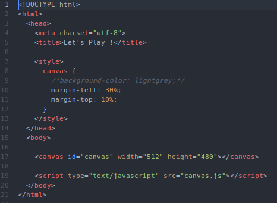

Contenu du fichier HTML qui ne bougera plus ensuite, un poil de style avec du CSS, on finit en attachant notre fichier Javascript.

Code Source

Contenu du fichier HTML qui ne bougera plus ensuite, un poil de style avec du CSS, on finit en attachant notre fichier Javascript.
Récupération du canvas via le DOM Contextualisation en 2d.
Variable bgReady de manière à ne charger l'image que lorsque le reste de la page est prête. Définition du fond d'écran comme étant une new Image() pour qu'il en récupère toutes les propriétés. Attribution de l'image choisie via la propriété .src De même pour le héros et le monstre.
Après avoir attribué les images, il faut les dessiner dans le canvas grâce à la propriété drawImage() qui prend en paramètre :
Création d'un objet par personnage dans lequel on définit :
Ajout des écouteurs d'évènements sur les touches du clavier. Quand une touche est appuyée, son keyCode est enregistré dans l'objet KeysDown défini précédemment. Une fois la touche lâchée (keyup), le nouvel objet est supprimé Ca permet un déplacement fluide du personnage ainsi qu'un facilité d'utilisation. Le joueur n'a pas besoin d'appuyer x fois sur une touche pour faire avancer le héros.
Fonction reset pour replacer les personnages dans le canvas après qu'un monstre soit touché. Le héros retourne au centre du canvas. Le monstre a une position aléatoire grâce à Math.random(). On enlève 64 pixels à la hauteur et la largeur du canvas pour éviter qu'il n'apparaisse en dehors du champs.
Fonction pour définir ce qu'il se passe à chaque update de la page Toutes les touches du clavier sont définies par des keyCodes. (Click !) Flèche du haut = 38. Si 38 est dans notre objet keysDown et que la position y de notre héros est supérieure à 0 (il est toujours dans le canvas) alors la position y diminue de la vitesse par le temps que la touche a été appuyée (paramètre modifier que l'on verra dans la fonction globale.) Répéter l'opération pour toutes les touches utilisées en fonction de la direction qu'on veut leur donner. Pour gérer si le héros a touché un monstre, il faut prendre en compte la taille des images de manière à ce qu'un monstre soit considéré comme "touché" lorsque le héro est à côté. Appelle de la fonction reset() pour faire apparaitre le monstre à un autre endroit.
Fonction main qui va faire tourner le jeu. La variable now = le temps T quand la fonction est appelée (en millisecondes). La variable then = le temps T enregistré lors du dernier update. Le paramètre de update (modifier) devient delta/1000 (le temps entre 2 update divisé par 1000 pour obtenir des secondes). La fonction requestAnimationFrame est un équivalent de setTimeout mais moins énergie-vore et surtout, étant intégré au navigateur pour soulager le processeur (pour approfondir : Click !)